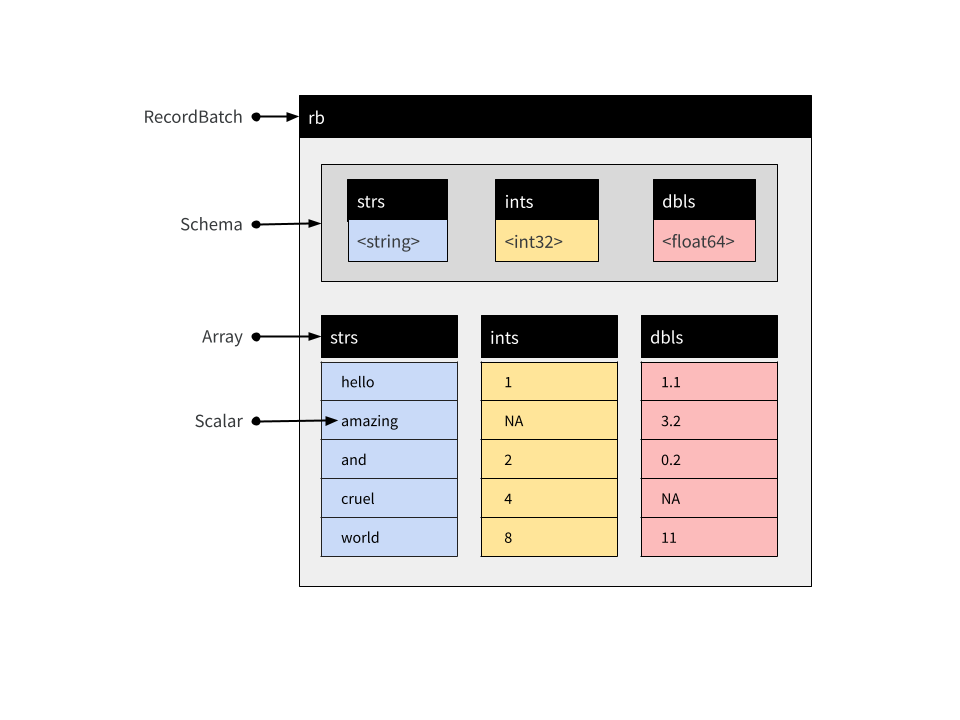

![]()
library(arrow, warn.conflicts = FALSE)
library(dplyr, warn.conflicts = FALSE)In an earlier post I wrote about Arrays and Tables in Apache Arrow. The focus of that post was on the in-memory data structures that Arrow uses to store tabular data. That meant the bulk of the post was focused on Record Batch and Table objects, as well as their constituent parts, Arrays and Chunked Arrays. It didn’t really talk about Datasets. Okay yeah there was a section on Datasets at the end of the post, but I was a bit evasive. I gave an example showing how to use Datasets, but I really didn’t talk much about what they are.
Okay fine, well, I forgive myself. A single blog post can’t solve all the world’s problems. However, I’m in the process of updating some of the Arrow R documentation at the moment and at this point I kind of do need to talk a bit more about the structure of Dataset objects.
This post is a bit of a sneak preview into where I’m headed with that.
Record Batches and Tables
Let’s start with Record Batches. A Record Batch is tabular data structure comprised of named Arrays, and an accompanying Schema that specifies the name and data type associated with each Array. We can create one manually using record_batch()
rb <- record_batch(
strs = c("hello", "amazing", "and", "cruel", "world"),
ints = c(1L, NA, 2L, 4L, 8L),
dbls = c(1.1, 3.2, 0.2, NA, 11)
)
glimpse(rb)RecordBatch
5 rows x 3 columns
$ strs <string> "hello", "amazing", "and", "cruel", "world"
$ ints <int32> 1, NA, 2, 4, 8
$ dbls <double> 1.1, 3.2, 0.2, NA, 11.0This is a Record Batch containing 5 rows and 3 columns. The command rb[1:3, 1:2] extracts the first three rows and the first two columns:
glimpse(rb[1:3, 1:2])RecordBatch
3 rows x 2 columns
$ strs <string> "hello", "amazing", "and"
$ ints <int32> 1, NA, 2The structure of a Record Batch is shown below:

Record Batches are a fundamental unit for data interchange in Arrow, but are not typically used for data analysis. The reason for this is that the constituent Arrays that store columns in a Record Batch are immutable: they cannot be modified or extended without creating a new object. When data arrive sequentially Record Batches can be inconvenient, because you can’t concatenate them. For that reason Tables are usually more practical.
So let’s turn to Tables next. From the user perspective a Table is very similar to a Record Batch but the constituent parts are Chunked Arrays. Chunked Arrays are flexible wrappers enclosing one or more Arrays. This makes it possible to concatenate tables:
df1 <- arrow_table(rb)
df2 <- arrow_table(
strs = c("I", "love", "you"),
ints = c(5L, 0L, 0L),
dbls = c(7.1, -0.1, 2)
)
df <- concat_tables(df1, df2)
glimpse(df)Table
8 rows x 3 columns
$ strs <string> "hello", "amazing", "and", "cruel", "world", "I", "love", "you"
$ ints <int32> 1, NA, 2, 4, 8, 5, 0, 0
$ dbls <double> 1.1, 3.2, 0.2, NA, 11.0, 7.1, -0.1, 2.0 Okay, what about Datasets? Ah well… that’s the one I haven’t quite worked out. Hence the purpose of this post.
Okay, what about Datasets? Ah well… that’s the one I haven’t quite worked out. Hence the purpose of this post.
So… Datasets?
Like Record Batch and Table objects, a Dataset is used to represent tabular data. At an abstract level, a Dataset can be viewed as an object comprised of rows and columns, and just like Record Batches and Tables, it contains an explicit Schema that specifies the name and data type associated with each column.
However, where Tables and Record Batches are data explicitly represented in-memory, a Dataset is not. Instead, a Dataset is an abstraction that refers to data stored on-disk in one or more files. Values stored in the data files are loaded into memory as a batched process. Loading takes place only as needed, and only when a query is executed against the data. In this respect Arrow Datasets are a very different kind of object to Arrow Tables, but the dplyr commands used to analyze them are essentially identical. In this section we’ll talk about how Datasets are structured.
What does a Dataset look like on-disk?
Reduced to its simplest form, the on-disk structure of a Dataset is simply a collection of data files, each storing one subset of the data. These subsets are sometimes referred to as “fragments”, and the partitioning process is sometimes referred to as “sharding”. By convention, these files are organized into a folder structure called a Hive-style partition: see hive_partition() for details.
To illustrate how this works, let’s write a multi-file dataset to disk manually, without using any of the Arrow Dataset functionality to do the work. We’ll start with three small data frames, each of which contains one subset of the data we want to store:
df_a <- data.frame(id = 1:5, value = rnorm(5), subset = "a")
df_b <- data.frame(id = 6:10, value = rnorm(5), subset = "b")
df_c <- data.frame(id = 11:15, value = rnorm(5), subset = "c")Our intention is that each of the data frames should be stored in a separate data file. As you can see, this is a quite structured partitioning: all data where subset = "a" belong to one file, all data where subset = "b" belong to another file, and all data where subset = "c" belong to the third file.
The first step is to define and create a folder that will hold all the files:
ds_dir <- "mini-dataset"
dir.create(ds_dir)The next step is to manually create the Hive-style folder structure:
ds_dir_a <- file.path(ds_dir, "subset=a")
ds_dir_b <- file.path(ds_dir, "subset=b")
ds_dir_c <- file.path(ds_dir, "subset=c")
dir.create(ds_dir_a)
dir.create(ds_dir_b)
dir.create(ds_dir_c)Notice that we have named each folder in a “key=value” format that exactly describes the subset of data that will be written into that folder. This naming structure is the essence of Hive-style partitions.
Now that we have the folders, we’ll use write_parquet() to create a single parquet file for each of the three subsets:
write_parquet(df_a, file.path(ds_dir_a, "part-0.parquet"))
write_parquet(df_b, file.path(ds_dir_b, "part-0.parquet"))
write_parquet(df_c, file.path(ds_dir_c, "part-0.parquet"))If we had wanted to, we could have further subdivided the dataset. A folder could contain multiple files (part-0.parquet, part-1.parquet, etc) if we wanted it to. Similarly, there is no particular reason to name the files part-0.parquet this way at all: it would have been fine to call these files subset-a.parquet, subset-b.parquet, and subset-c.parquet if we had wished. We could have written other file formats if we wanted, and we don’t necessarily have to use Hive-style folders. You can learn more about the supported formats by reading the help documentation for open_dataset(), and learn about how to exercise fine grained control with help("Dataset", package = "arrow").
In any case, we have created an on-disk parquet Dataset using Hive-style partitioning. Our Dataset is defined by these files:
list.files(ds_dir, recursive = TRUE)[1] "subset=a/part-0.parquet" "subset=b/part-0.parquet"
[3] "subset=c/part-0.parquet"To verify that everything has worked, let’s open the data with open_dataset() and call glimpse() to inspect its contents:
ds <- open_dataset(ds_dir)
glimpse(ds)FileSystemDataset with 3 Parquet files
15 rows x 3 columns
$ id <int32> 1, 2, 3, 4, 5, 6, 7, 8, 9, 10, 11, 12, 13, 14, 15
$ value <double> 1.26252750, 0.17406155, 1.22934127, -1.01721495, 0.43295521, 0…
$ subset <string> "a", "a", "a", "a", "a", "b", "b", "b", "b", "b", "c", "c", "c…
Call `print()` for full schema detailsAs you can see, the ds Dataset object aggregates the three separate data files. In fact, in this particular case the Dataset is so small that values from all three files appear in the output of glimpse().
It should be noted that in everyday data analysis work, you wouldn’t need to do write the data files manually in this fashion. The example above is entirely for illustrative purposes. The exact same dataset could be created with the following command:
ds |>
group_by(subset) |>
write_dataset("mini-dataset")In fact, even if ds happens to refer to a data source that is larger than memory, this command should still work because the Dataset functionality is written to ensure that during a pipeline such as this the data is loaded piecewise in order to avoid exhausting memory.
What is stored in-memory by the Dataset object?
In the previous section we examined the on-disk structure of a Dataset. We now turn to the in-memory structure of the Dataset object itself (i.e., ds in the previous example). When the Dataset object is created, arrow searches the dataset folder looking for appropriate files, but does not load the contents of those files. Paths to these files are stored in an active binding ds$files:
ds$files [1] "/home/danielle/GitHub/sites/quarto-blog/posts/2022-11-20_unpacking-arrow-datasets/mini-dataset/subset=a/part-0.parquet"
[2] "/home/danielle/GitHub/sites/quarto-blog/posts/2022-11-20_unpacking-arrow-datasets/mini-dataset/subset=b/part-0.parquet"
[3] "/home/danielle/GitHub/sites/quarto-blog/posts/2022-11-20_unpacking-arrow-datasets/mini-dataset/subset=c/part-0.parquet"The other thing that happens when open_dataset() is called is that an explicit Schema for the Dataset is constructed and stored as ds$schema:
ds$schemaSchema
id: int32
value: double
subset: string
See $metadata for additional Schema metadataBy default this Schema is inferred by inspecting the first file only, though it is possible to construct a unified schema after inspecting all files. To do this, set unify_schemas = TRUE when calling open_dataset(). It is also possible to use the schema argument to open_dataset() to specify the Schema explicitly (see the schema() function for details).
The act of reading the data is performed by a Scanner object. When analyzing a Dataset using the dplyr interface you never need to construct a Scanner manually, but for explanatory purposes we’ll do it here:
scan <- Scanner$create(dataset = ds)Calling the ToTable() method will materialize the Dataset (on-disk) as a Table (in-memory):
scan$ToTable()Table
15 rows x 3 columns
$id <int32>
$value <double>
$subset <string>
See $metadata for additional Schema metadataThis scanning process is multi-threaded by default, but if necessary threading can be disabled by setting use_threads = FALSE when calling Scanner$create().
How does a Dataset query work?
When a query is executed against a Dataset a new scan is initiated and the results pulled back into R. As an example, consider the following dplyr expression:
ds |>
filter(value > 0) |>
mutate(new_value = round(100 * value)) |>
select(id, subset, new_value) |>
collect() id subset new_value
1 6 b 61
2 7 b 31
3 9 b 158
4 10 b 85
5 1 a 126
6 2 a 17
7 3 a 123
8 5 a 43
9 12 c 8
10 15 c 56We can replicate this using the low-level Dataset interface by creating a new scan by specifying the filter and projection arguments to Scanner$create(). To use these arguments you need to know a little about Arrow Expressions, for which you may find it helpful to read the help documentation in help("Expression", package = "arrow").
The scanner defined below mimics the dplyr pipeline shown above,
scan <- Scanner$create(
dataset = ds,
filter = Expression$field_ref("value") > 0,
projection = list(
id = Expression$field_ref("id"),
subset = Expression$field_ref("subset"),
new_value = Expression$create("round", 100 * Expression$field_ref("value"))
)
)and if we were to call as.data.frame(scan$ToTable()) it would produce the same result as the dplyr version, though the rows may not appear in the same order.
To get a better sense of what happens when the query executes, what we’ll do here is call scan$ScanBatches(). Much like the ToTable() method, the ScanBatches() method executes the query separately against each of the files, but it returns a list of Record Batches, one for each file. In addition, we’ll convert these Record Batches to data frames individually:
lapply(scan$ScanBatches(), as.data.frame)[[1]]
id subset new_value
1 1 a 126
2 2 a 17
3 3 a 123
4 5 a 43
[[2]]
id subset new_value
1 6 b 61
2 7 b 31
3 9 b 158
4 10 b 85
[[3]]
id subset new_value
1 12 c 8
2 15 c 56If we return to the dplyr query we made earlier, and use compute() to return a Table rather use collect() to return a data frame, we can see the evidence of this process at work. The Table object is created by concatenating the three Record Batches produced when the query executes against three data files, and as a consequence of this the Chunked Array that defines a column of the Table mirrors the partitioning structure present in the data files:
tbl <- ds |>
filter(value > 0) |>
mutate(new_value = round(100 * value)) |>
select(id, subset, new_value) |>
compute()
tbl$subsetChunkedArray
<string>
[
[
"b",
"b",
"b",
"b"
],
[
"a",
"a",
"a",
"a"
],
[
"c",
"c"
]
]Reuse
Citation
BibTeX citation:
@online{navarro2022,
author = {Danielle Navarro},
editor = {},
title = {Unpacking the {Arrow} on-Disk {Dataset} {API}},
date = {2022-11-20},
url = {https://blog.djnavarro.net/posts/2022-11-20_unpacking-arrow-datasets},
langid = {en}
}
For attribution, please cite this work as: